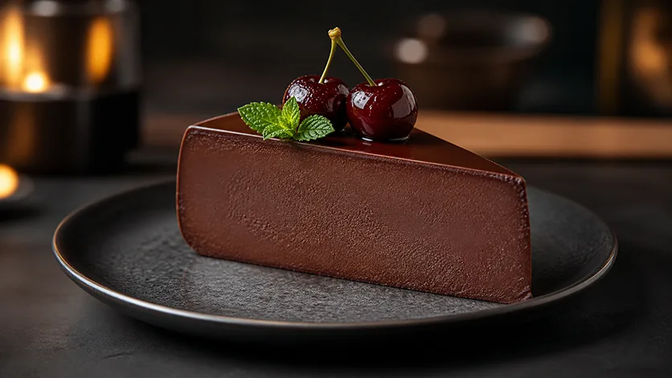

Десерты · 20 минут
Шоколадно-вишневый «Черный лес»
Насыщенный вкус темного шоколада, терпкий вишневый аромат на сиропе без калорий, тающая кремовая текстура и рекордное содержание протеина при минимуме углеводов.
К ингредиентам
Ингредиенты · 4 порций
- Творог в брикете (0.1–2%) — 400 г (2 пачки)
- Греческий йогурт или мягкий творог (0.1–2.5%) — 120 г (1 шт)
- Яйца куриные С0 — 2 шт (~125 г)
- Протеин КСБ-80 (без вкуса) — 30 г (1 скуп)
- Какао-порошок (темный/алкализованный) — 20 г (~1.5 ст. л.)
- Сироп 0 ккал «Вишня-Шоколад» — 50–60 мл
- Заменитель сахара (ФитПарад) — 4–5 стиков
- Псиллиум (шелуха) — 3 ч. л. с горкой (~15 г)
- Соль мелкая — Щепотка
Пищевая ценность
На 100 г: 128 ккал · Б 19.1 г · Ж 3.3 г · У 3.2 г
Шаг за шагом
Жидкая шоколадная база
В чашу блендера выложите творог (400 г), греческий йогурт (120 г), 2 яйца С0, влейте 50–60 мл сиропа «Вишня-Шоколад» без сахара.
Взбивание с какао и протеином
Добавьте 20 г какао-порошка, протеин (30 г), 4–5 стиков ФитПарада и щепотку соли. Пробейте блендером 2 минуты до шелковистого темно-шоколадного крема.
Введение псиллиума
Всыпьте 3 ч. л. псиллиума, перемешайте лопаткой и оставьте на 5–7 минут для набухания и стабилизации массы.
Выпекание в аэрогриле
Форму (диаметр 16–18 см) застелите пергаментом, выложите шоколадную массу. Выпекайте при 170°C в течение 20 минут.
Охлаждение и подача
Остудите до комнатной температуры и уберите в холодильник на 2–3 часа. При подаче полейте сверху 1 ложкой сиропа «Вишня-Шоколад»!